A garden wedding looks effortless in photos, and it takes considerably more planning behind the scenes than an indoor venue ever does.
Weather, bugs, sound, and uneven ground all become real variables the moment a ceremony moves outside.
These nine tips cover what actually keeps a garden wedding running smoothly from start to finish.

Flash Furniture Hercules Series White Resin Folding Chairs, Set of 4, 800 lb Capacity
Shop on Amazon1. Always Have a Plan B
A non-negotiable backup plan, not just a hopeful one, is what actually protects a garden wedding from a single bad-weather day ruining everything.
Confirming that backup space and timeline with the venue well in advance avoids a last-minute scramble if the day doesn't go the way it was supposed to.
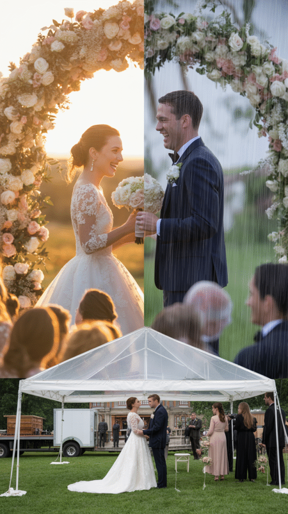
2. Make It Comfortable for Guests
Shade, seating that doesn't sink into the lawn, and easy access to restrooms matter more at an outdoor wedding than most guests ever mention out loud.
A comfortable guest stays relaxed and present, rather than quietly counting down the minutes until the reception moves somewhere easier on the feet.
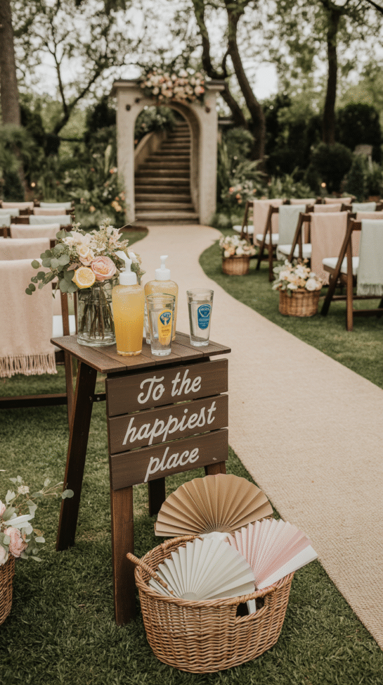
VINGLI Folding Chairs, Plastic, 350 lb Capacity, Portable Indoor and Outdoor
Shop on Amazon3. Let Decor Work With Nature, Not Against It
Simple, natural decor that complements the garden's existing greenery tends to look far more intentional than an elaborate setup fighting against its own setting.
The garden itself is already doing a lot of the visual work on its own, which means less decor is often genuinely more here.
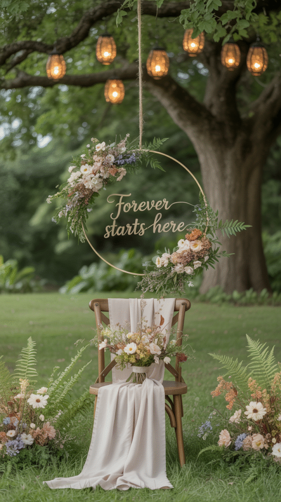
4. Plan Food and Drinks Around Nature
Covered food stations and bussed drinks service hold up far better against wind, insects, and heat than an open buffet left exposed for the whole event.
This is worth discussing directly with the caterer well before the day arrives, since outdoor service requires real adjustments to a standard indoor plan.
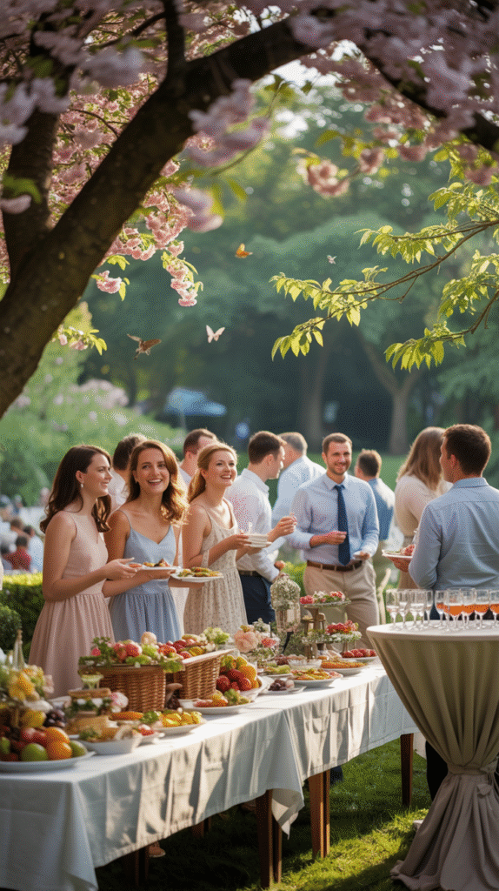
5. Plan Sound and Lighting for the Outdoors
Outdoor acoustics swallow sound in a way an indoor room never does, which makes a proper sound system a genuine necessity rather than a nice-to-have extra.
String lights, lanterns, and other layered lighting matter more here too, since a garden has none of an indoor venue's built-in fixtures to lean on after dark.
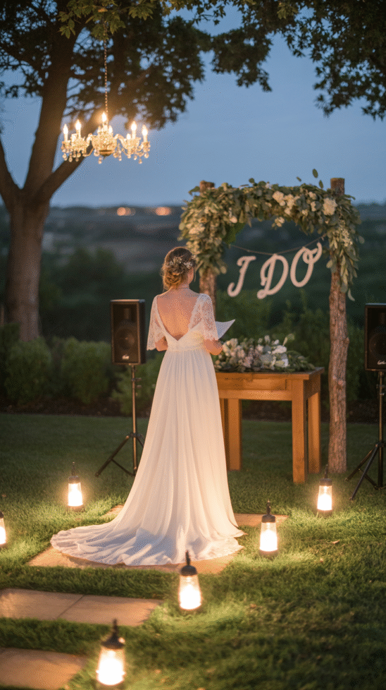
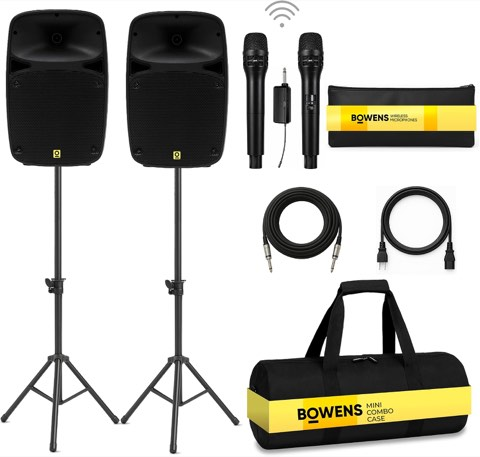
Bowens Dual 8 Inch 400W Portable PA System, Bluetooth, USB/SD, LCD and Remote
Shop on Amazon
Tenmiro 200FT Outdoor String Lights, Ultra Long LED Patio Lights with Shatterproof High
Shop on Amazon6. Keep the Bugs Away Tastefully
Citronella elements woven directly into the decor, rather than a visible can of spray sitting on a table, handle pest control without looking like an afterthought.
Timing the ceremony to avoid peak bug hours, usually right around dusk, solves a good portion of the problem before it even starts.
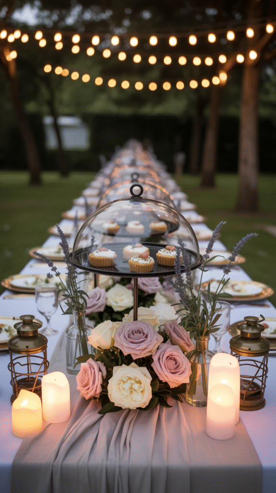
7. Dress for the Grass
Heels sink into soft lawn in a way that ruins both the shoes and the whole walking experience, which makes footwear a genuine planning consideration rather than an afterthought.
Guests benefit from a heads-up about the terrain too, so everyone can choose footwear that won't fight the ground all afternoon.
FITORY Women's Flat Slide Sandals, Soft Leather, Summer
Shop on Amazon8. Weatherproof the Whole Day
A tent, umbrellas, and a few fans or heaters, depending on the season, turn an unpredictable forecast from a full-blown crisis into a minor inconvenience at most.
Booking these rentals well in advance matters more for a garden wedding than almost any other logistic, since availability disappears fastest during peak wedding season.
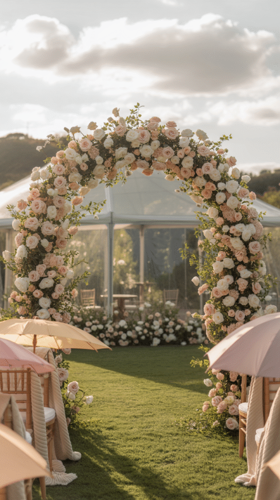
9. Choose the Right Venue
Not every garden is actually wedding-ready, checking for flat ground, shade coverage, and a genuine backup indoor space matters more than how the garden photographs on its own.
Walking the venue at the same time of day as the planned ceremony reveals lighting and shade conditions that a daytime-only tour visit can easily miss entirely.
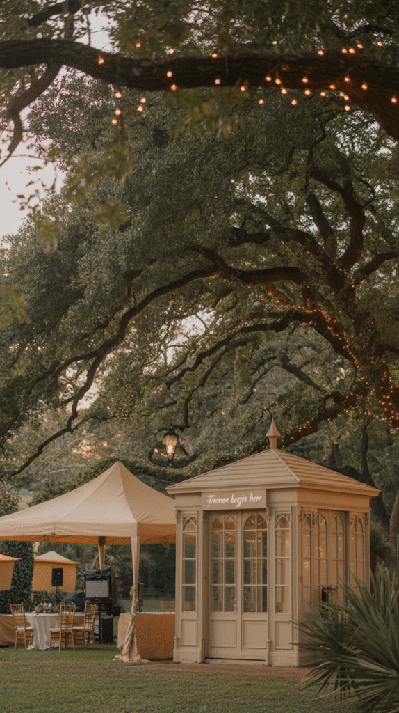
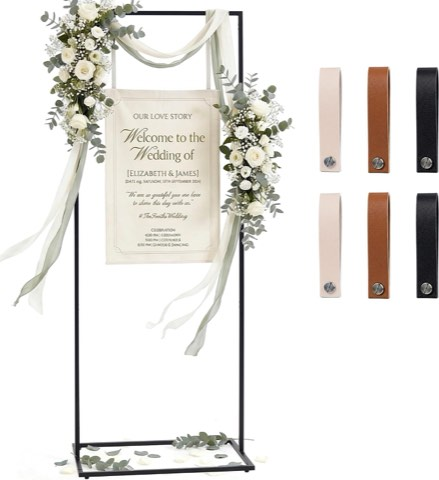
Wedding Welcome Sign Stand, 79 Inch Extra-Tall, Black Metal Sign Holder with Leather Straps
Shop on Amazon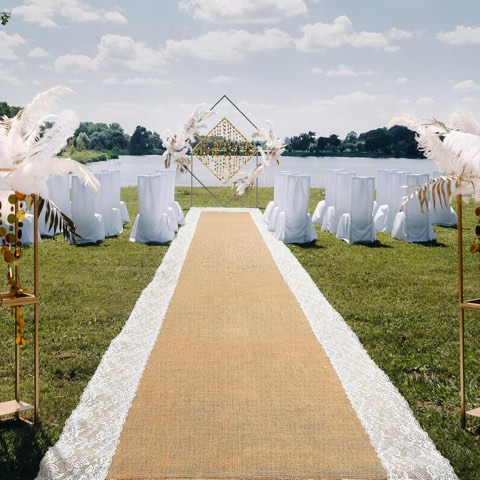
Preboun Aisle Runner for Wedding Ceremony, 3 x 30 Ft, Burlap Lace Style
Shop on AmazonDreamy, But Only With a Real Plan
None of these nine tips are about dampening the appeal of a garden wedding, they're about protecting it from the things that actually go wrong.
Get the venue, the weatherproofing, and the backup plan right, and everything else genuinely becomes the fun part of the planning process.